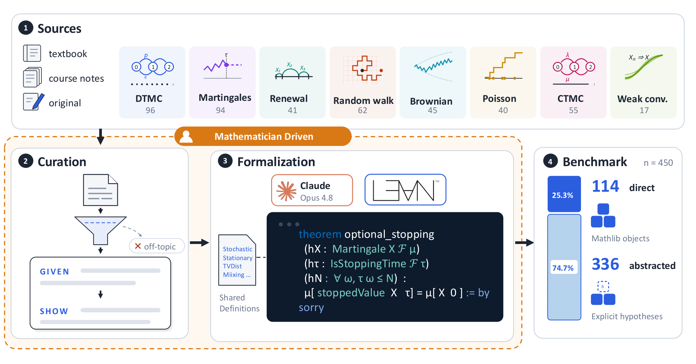

Introduces a Lean 4 benchmark of 450 graduate stochastic-processes theorem targets with informal pairings, and evaluates an LLM proof agent on them.
Abstract
Leading benchmarks for formal theorem proving with large language models are small collections drawn from competition math, such as the IMO and Putnam, that poorly represent field-specific applications. We introduce StochBench, a Lean 4 benchmark of 450 graduate stochastic-processes problems at varying abstraction levels, each paired with its natural-language source. Addressing a field underrepresented in Mathlib, it covers finite and countable Markov chains, renewal processes, random walks, martingales, stopping times, queues, Brownian motion, stochastic calculus, weak convergence, and Poisson and continuous-time Markov processes. Our Opus 4.8-based agent achieves a 34.9% proof rate (157/450) under a 15-minute per-problem limit. StochBench better represents domain-specific applied mathematics while remaining challenging for advanced provers.
Problem
Leading formal theorem-proving benchmarks are drawn mainly from competition math and poorly represent field-specific applied mathematics. Stochastic processes are underrepresented in Mathlib and existing evaluations.
Approach
StochBench provides 450 Lean 4 theorem targets in graduate stochastic processes, each paired with a natural-language source, covering eight topics from Markov chains to Brownian motion and stochastic calculus. Targets are classified as direct (using Mathlib/shared definitions) or abstracted (taking required properties as hypotheses), with 114 direct and 336 abstracted. A multi-turn Opus 4.8-based agent using lean4skills and the Lean LSP MCP server attempts each proof under a 15-minute cap, with proofs checked as clean if Lean accepts without sorry or admitted facts.

Figure 1 : Construction of StochBench : mathematician-led curation and LLM-assisted formalization with shared definitions produce 450 Lean 4 targets across eight topics, comprising 114 direct and 336 abstracted statements.
Results
The agent produced 157 clean proofs out of 450 (34.9%). Clean-proof rates varied by topic, with martingales and stopping highest (61.7%) and renewal processes lowest (4.9%); direct targets succeeded at 69.3% versus 23.2% for abstracted.